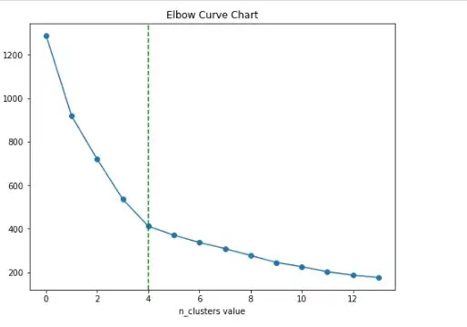
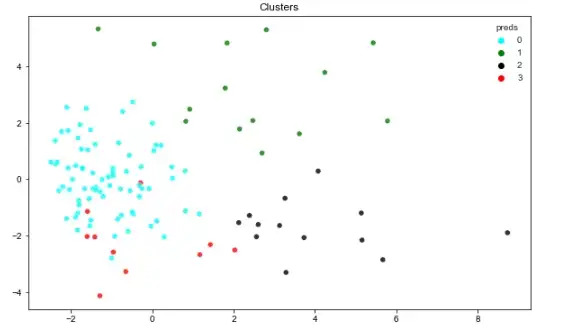
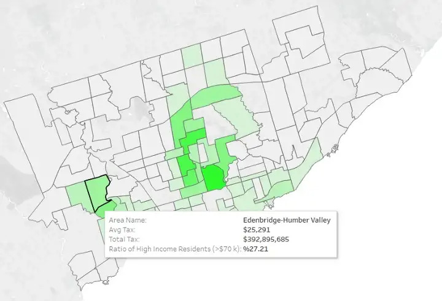

Solving a Business Problem with Machine Learning
Assume that you are an entrepreneur and want to launch a new business but do not know where. It is a critical decision because the characteristics of the chosen area directly affect the survival chance of your business at the beginning and its profitability later on.
I will tell you how you can utilize data science techniques to find an answer to this problem by walking through one of my projects.

Business Problem:
An entrepreneur would like to launch a gym business in central Toronto, Canada, and s/he would like to know which neighborhood would be the best place for such an investment.
Ideas For Possible Solutions
Market research is a must before making a new investment and launching a new product. So this is how I start the project. I need to collect information under the metrics of classic market research activities.
As an individual researcher, I do not have the budget for surveys or questionnaires. It is best to rely on ready-to-use official data which is decent enough to give an idea about the situation.
Generally, market research metrics revolve around the demand, market size, economic wellbeing, and other sociological realities like cultural and religious background and crime rate. Therefore, it is best to gather information for every subtitle of market research.
I chose my metrics to be the customer potential(size of the target audience), competition level, and income level of the neighborhood. Another big factor would be the security level of the neighborhood.
The metrics above rely on the simplest business realities. Let me explain;
Customer Potential:
No business is sustainable without a demand for its products or services. Therefore, every business should have an idea about the demand in the market. Customer potential is the primary metric measuring the potential demand.
In this case, the demographics of gym subscribers gain importance. Statistics show that the majority of gym subscribers are between 15 – 45 years old. It is a good idea to consider the population between the mentioned age range as the primary target for the business.
Competition Level
This is a very straightforward factor, sales of a business would be negatively affected by any type of competitor. If competition is high in a market, it is generally better to avoid launching a product/business in that market. Substitutes should also be taken into consideration which may dry the demand out of the market.
For gym subscribers, the substitutes would be green spaces, parks, and running trails that they can use to do sports instead of going to a gym. Collecting data about the alternatives to the business adds another dimension to the analysis.
Income Level:
Potential demand is not effective alone, it should be coupled with the purchasing power. In some cases, prospects may desire a purchase but may not afford it, so, it is important to check if people can afford the products/services of the planned business.
Statistics show that gym subscribers are generally people who earn $70,000 and more. Having an idea about the percentage of people who fits this profile would be very helpful for the purpose.
Security Level
This factor can easily be measured by the crime rate data. A neighborhood with a high crime rate is not a logical place to launch a business. Unsafe areas are directly disadvantageous in terms of demand. On the other hand, the chance of having unusual distasteful events could increase costs and reduce profits.
Now, that I highlighted the criteria for the new business investment, I would like to show how we can use these.
The Process:
- Gather data about the required fields
- Clean the data and optimize
- Use the data in a machine learning clustering model
- Visualize the findings
Gatherind Data:
Toronto municipality offers an amazing database. This database gives access to a ton of demographic, economic, and sociological records for each neighborhood.
I collected data about the crime rate, income level, size of green parks, and the number of potential customers using this database API.
In addition to these, I collected spatial data for the neighborhoods to present the findings on a map.
This is the link for the Database of Toronto Municipality
On the other hand, the Foursquare application also provides a free API service that helped me detect the locations of gyms in each area. I used this to get an idea about the competition level.
Link for Foursquare APII gathered the data from these APIs in desired formats by using Python. This is the link for the details of the data collection part of the project.
Data Cleaning and Optimization
The data is obtained smoothly from the APIs. However, since they come from different sources I had to convert them into matching formats. This process took most of my time but there are not many exciting things to show. The details are in the code for which I attached the links below.
Machine Learning Modeling
After getting the data, we need to use an unsupervised machine learning model to make inferences from the data. The name of the model is K-Means clustering, it is the most popular model clustering model in the machine learning field. As its name suggests, it clusters the occurrences (neighborhoods) according to their characteristics. A technique called elbow curve hints about the optimal number of clusters the data needs to be separated.
Elbow curve hints at 4 clusters.
After adjusting the number of clusters, I run the model. This is the visualization of the output.
Cluster 0 and 3 are mixed but they are not what we are interested in. According to the model, the best neighborhoods for investment are the ones in cluster 2. The neighborhoods in question show the highest level of income level, comparatively low level of competition, and acceptable crime rate.
Here is the link for the details of the model, data, and neighborhoods.
Visualization:
The best neighborhoods are detected and listed. It is also important to show them on a map. I needed to merge the geospatial data and clustering results to do it. The image shown below is an example from the representation created in Tableau. Here , there is an interactive dashboard that gives detailed information about the neighborhoods which may help the decision-makers.
I hope the article helps you. It only includes the introduction and the general framework of the project. The links for the details of the project are given below: